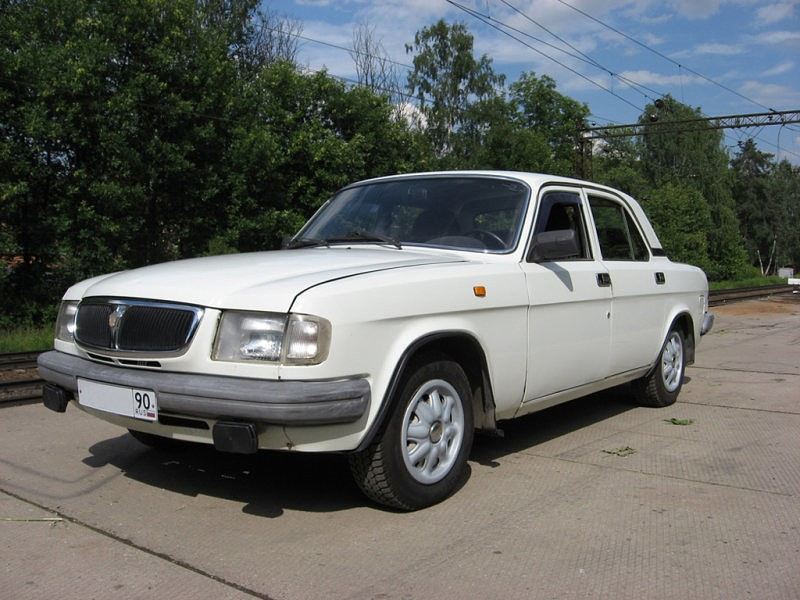
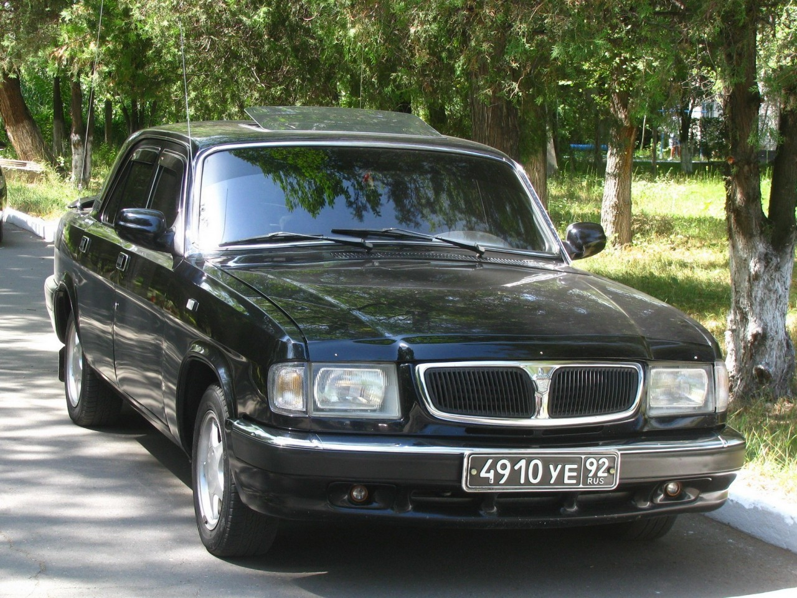
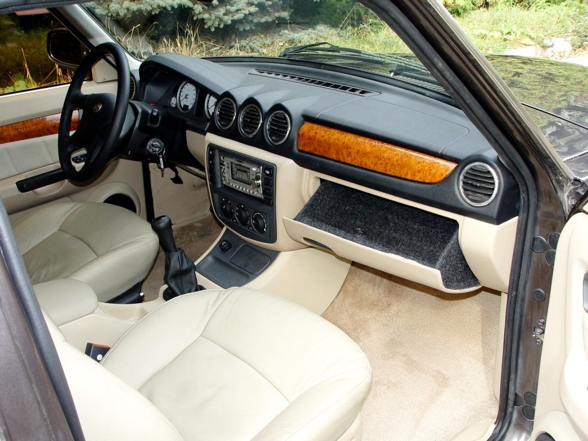
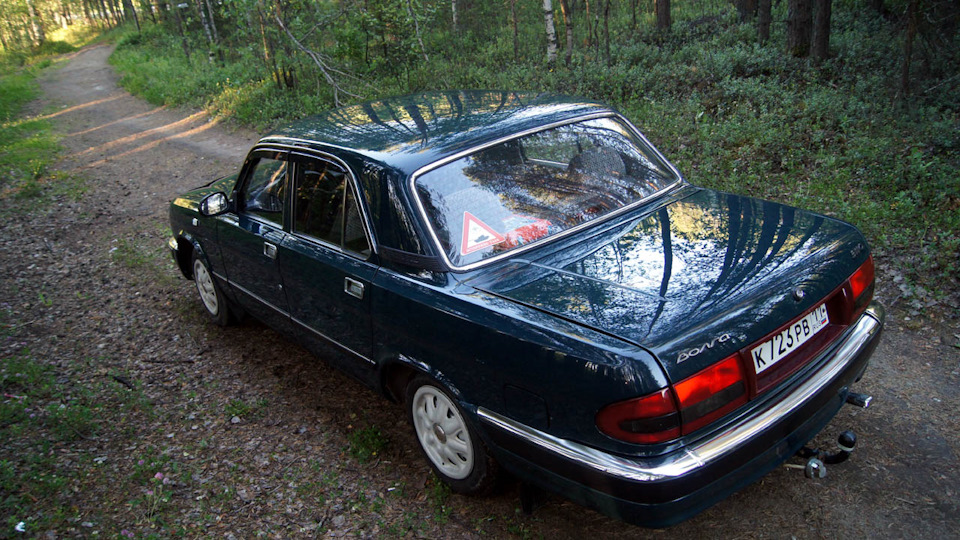

ГАЗ 3110
Российский автомобиль бизнес-класса, выпускавшийся с 1996 по 2005 год. Являясь преемником модели 3102, также использовался для перевозки исполнительных лиц,чиновников, высокопоставленных офицеров. Автомобиль имел хорошую репутацию среди таксистов благодаря своей надёжности.


ГАЗ 3110 комплектовался несколькими двигателями: турбодизельный (2.1л 95/110 л.с.),
бензиновый с карбюратором (2.4л 81/90л.с.) и инжекторный (2.3л 131/150 л.с.). Наиболее распространены первые два варианта силового агрегата, оставшиеся же весьма редки. Примечательно: все двигатели - 4х-цилиндровые. Трансмиссия - механическая,4 и 5-ступенчатая.

За счёт длины в почти 5 метров места немало как на переднем, так и на заднем ряду. В самом салоне отделка могла быть как тканевой, так и кожаной. Задний ряд, как правило, имел подлокотник. Также, на приборной панели могли быть вставки под дерево, устанавливавшиеся самими хозяевами. Некоторые владельцы ГАЗ 3110 занимались полной перетяжкой салона, доводя его до уровня иномарок.

В народе эта машина сыскала большую славу благодаря своей изначальной готовности к реалиям российских дорог - клиренс составляет 156 мм. Ширина в 1.8 м сопоставима с шириной автомобилей немецкого рынка тех лет, что весьма недурно для седана. Сами владельцы Волги отмечают высокую ремонтопригодность авто: запчастей много, стоят вменяемых денег, в отдельных случаях уместен самостоятельный ремонт. В случае с "прожорливостью" карбюратора на ЗМЗ-402 ситуация обстоит лучше на моделях с инжекторным ЗМЗ-406, так как расход снизился почти вдвое.